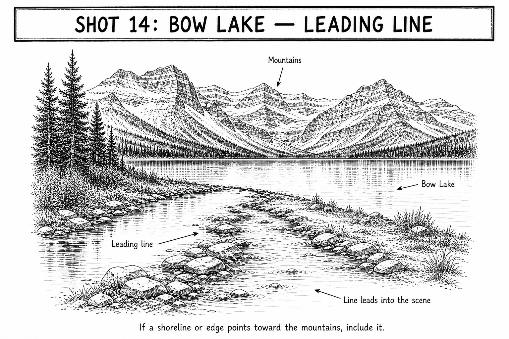

Start here
Av | Aperture f/8 | ISO Auto
How to take it
- Walk the shore until a natural edge points into the scene.
- Start the line near the bottom and let it lead toward the lake or mountains.
- Put the AF point on a crisp mountain or far-shore edge, not on water.
- Half-press and confirm the far edge is sharp.
- Take one frame with the leading line and one simpler wide frame.
Focus this shot
Place it: Put the AF point on a crisp mountain or far-shore edge, not on water.
Look for: The far edge should look crisp when the camera confirms focus.
If this happens
| Line feels weak | Move sideways until the shore edge enters closer to a bottom corner. |
|---|---|
| Camera will not focus | Aim at a high-contrast far-shore or mountain edge. |
| Sky is washed out | Try -1/3 exposure compensation and compare. |
| Picture is blurry | Brace the camera and raise ISO if speed is below 1/125. |
Tips
- Bow Lake is a quick stop, so take the clear frame first.
- Do not force a leading line if the simpler view looks better.